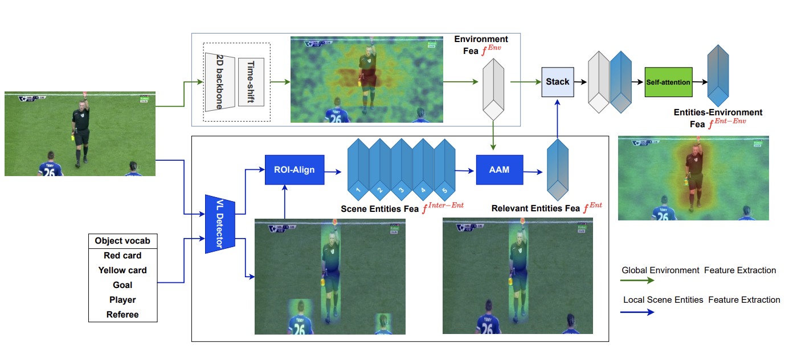
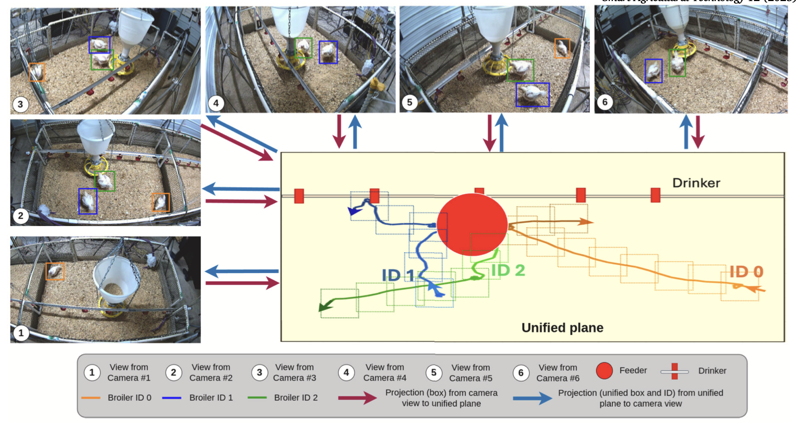
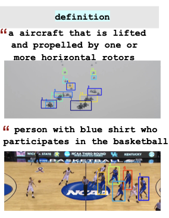

|
Kim Tran
I am currently a Master's student in Computer Science at the University of Arkansas, advised by Prof. John Gauch and Prof. Ngan Le in the areas of computer vision and computer graphics. Prior to my master's, I was an AI Research Resident at FPT AI Center, where I had the privilege of working closely with Prof. Ngan Le. I earned my bachelor's degree in Computer Science from National University, University of Science, Vietnam. |

|
ResearchMy motivation for doctoral research stems from a compelling challenge: while reinforcement learning has achieved remarkable successes in simulated domains (e.g. games and robotics simulators), most real-world control problems cannot rely on unlimited data or perfect simulators. Motivated by this, my research interests lie at the intersection of model-based reinforcement learning, physics-informed modeling, graph neural networks, and control systems, with a focus on enabling intelligent agents to operate safely and efficiently in real-world environments with limited data. I am curious about three key questions: • How can reinforcement learning be applied across diverse practical domains such as industrial automation, education, healthcare, and aerospace—beyond the current emphasis on LLMs and robotics? • How can multi-modality (drawing from my background in vision-language models and 3D geometry) be effectively integrated into reinforcement learning to enhance perception and decision-making? • How can we bridge the gap between simulation and reality in real-world control problems with limited data? My long-term goal through a PhD program, is to create adaptive, interpretable, and generalizable reinforcement learning frameworks that can be applied to complex and practical domains and advance the foundation of learning-based control and its integration with physics-based models, perception and graph-structured representations for real-world decision-making. |
Publications |
|
|
Z-GMOT: Zero-shot Generic Multiple Object Tracking
Kim Tran, Anh Duy Le Dinh, Tien-Phat Nguyen, Thinh Phan, Pha Nguyen, Khoa Luu, Donald Adjeroh, Gianfranco Doretto, Ngan Le Findings of NAACL, 2024 Project Page / Proceedings With the insight that existing vision-language models rely heavily on object categories while overlooking object attributes and characteristics, we proposed a benchmark to evaluate this limitation and introduced a framework for generic multiple-object tracking from natural language descriptions, enabling models to track unseen categories by focusing on object attributes without requiring retraining. |
|


|
Unifying Global and Local Scene Entities Modelling for Precise Action Spotting
Kim Tran*, Phuc Do* , Ngoc Ly, Ngan Le IJCNN, 2024 (Oral Presentation) Project Page / Arxiv / Proceedings Motivated by the fact that existing video action recognition models process entire frames without adequately considering the objects in the scene and their interactions, our method jointly modeled global scene context and local object interactions (e.g., players, goal, ball, and referee in soccer), achieving state-of-the-art performance (Ranked #1 on the SoccerNet 2024 leaderboard). |
|


|
BroilerTrack: Automatic multi-camera multi-broiler tracking
Thinh Phan, Kim Tran, Andrew Lockett, Isaac Phillips, Hao Vo, Duy Le, Michael T. Kidd, James Mason, Santiago Avendano, Ngan Le Smart Agricultural Technology, 2025 Proceedings Developed a multi-camera tracking system for tracking poultry in real-world farm environments. By performing camera calibration and designing a multi-view tracking algorithm, the system can accurately track at least 10 chickens across six views of each pen with very high consistency (each chicken is assigned a unique ID that is maintained over time and across all six views). |

|
TP-GMOT: Tracking Generic Multiple Object by Textual Prompt with Motion-Appearance Cost (MAC) SORT
Duy Le Dinh Anh, Kim Tran, Ngan Le ECAI, 2024 (Oral Presentation) Proceedings |
|


|
Enhanced Kalman with Adaptive Appearance Motion SORT for Grounded Generic Multiple Object Tracking
Duy Le Dinh Anh, Kim Tran, Quang Thuc Nguyen, Ngan Le ACCV, 2024 (Oral Presentation) Proceedings |